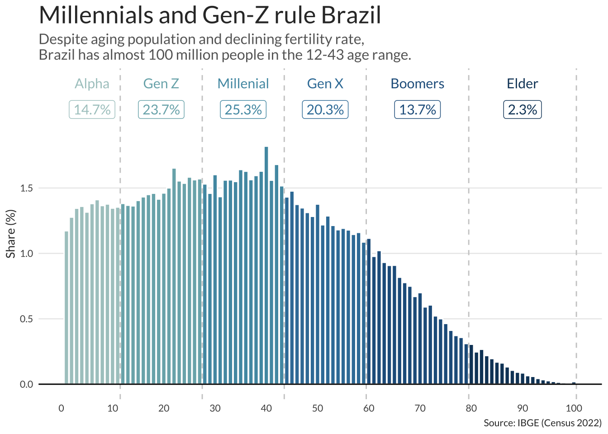

Generations in Brazil
Like many other countries, Brazil is aging rapidly. The combination of increasing life expectancy and declining fertility rates means that, in the long run, the proportion of elderly people in the population will rise, while the share of young people will decline. Despite this long-term trend, the current demographic outlook reveals the largest contingent of teens and young adults in Brazilian history. Nearly 100 million people, close to half of the population, belong to Gen Z and Gen Y (Millennials), ranging in age from 12 to 43.
The cut-offs for each generation cohort, in the plot above, followed directly Beresford Research’s definition (which adapted the previous definition developed by the Pew Research Center. The data comes from the most recent Brazilian Census (2022).

This should be the last great young population for Brazil which means the country should try to make the best of it. As this population begins to age, dependency ratios will increase rapidly pressuring the already fragile public pension system. This is particularly true of cities in the South and Southeast of Brazil.
| Generation | Age Range | Population | Share | Cumulative Share |
|---|---|---|---|---|
| Alpha | 1-11 | 29.515.539 | 14,70% | 14,70% |
| Gen Z | 12-27 | 47.564.885 | 23,70% | 38,40% |
| Millenial | 28-43 | 50.847.471 | 25,33% | 63,73% |
| Gen X | 44-59 | 40.681.106 | 20,27% | 84,00% |
| Boomers | 60-79 | 27.526.536 | 13,71% | 97,71% |
| Elder | 80-100 | 4.586.954 | 2,29% | 100,00% |
A worrying trend is the rising number of unemployed and uneducated among the Brazilian youth. Recent unemployment numbers from PNAD still show a big gap in unemployment rates, specially for the Gen Z’s who are entering the labor market.
A recent study from IBGE, published in the Summary of Social Indicators, shows that 22,3% of Brazilians aged 15 to 29 neither studied nor worked in 2022. This is equivalent to almost 11 million youngsters.
A recent report from the OECD also notes that Brazil has a very large share of NEETs (neither employed nor in formal education or training) in the 18-24 age. The NEETs in Brazil are overwhelmingly black, female, and low-income, highlighting the countries unequal access to opportunities.